| species | palate_length | tongue_length |
|---|---|---|
| Lichonycteris obscura | 10.0 | 36.1 |
| Glossophaga comissarisi | 10.7 | 26.6 |
| Glossophaga soricina | 11.4 | 30.2 |
| Anoura caudifer | 11.6 | 36.7 |
| Hylonycteris underwoodi | 13.4 | 36.7 |
| Anoura geoffroyi | 13.8 | 39.6 |
| Lonchophylla robusta | 14.3 | 42.6 |
| Anoura fistulata | 12.4 | 85.2 |
| Anoura cultrata | 14.3 | 34.3 |
| Leptonycteris curosoae | 16.0 | 40.2 |
| Choeronycteris mexicana | 18.0 | 52.1 |
3 Workikng with data
3.1 Goals
- Learn to create data files
- Explore the importance of random sampling
- Understand variance and standard deviation
- Understand mean and median
As will be the case with all labs, this lab will be completed using Posit Cloud. If needed, refer back to “Setup” and “Lab 1” for instructions on access and setting up your workspace for this lab. Here is the direct link to the Posit Cloud shared workspace for Lab 2: xyz.
3.2 Learning the Tools
3.2.1 Structure of a good data file
Data files appear in many formats, and different formats are sometimes preferable for different tasks. But there is one way to structure data — called “long” format — that is extremely useful for most things that you will want to do in statistics and R.
Long format is actually very simple. Every row in the data set is a unique individual. Every column is a variable being measured on those individuals.
For example, last week in Question 4 we looked at some data about the tongue and palate lengths of several species of bats. There were three variables in that data set, the species name, tongue length, and palate length. Here each “individual” is a species. Here is that data in long format—each row is an individual. There are three columns, one for each variable:
3.2.2 Creating a data file
When you have new data that you want to get into the computer in a format that R can read, it is often easiest to do this outside of R. A spreadsheet program like Excel (or a freely available program like Google Sheets) is a straightforward way to create a .csv file that R can read. For the lab today, we’ll use Google Sheets.
Log into Google Drive using your userid@hawaii.edu credentials.
Create a new Google Sheet
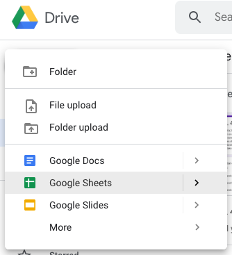
- Name the new sheet “BatTongues2”
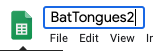
- Enter data
In the first row of your new spreadsheet, write your variable names, one for each column. (Be sure to give them good names that will work in R following principles of spreadsheet organized in Broman & Woo (2018). Mainly, don’t have any spaces in a variable name and make sure that it doesn’t start with a number or contain punctuation marks. See Lab 01 for more about naming variables.)
On the rows immediately below that first row, enter the data for each individual, in the correct column. Here’s what the spreadsheet would look like for the bat data after they are entered:

- Download as a .csv file. Go to “File > Download > Comma-spearate values (.csv, current sheet)”
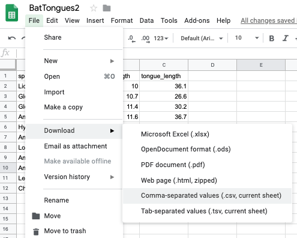 Save to the Desktop (or elsewhere that is convenient) as “BatTongues2.csv”

Saving a spreadsheet in a format that R can read is very straightforward. In these tutorials, we are using .csv files (which stands for comma separated values).
- Upload file to RStudio Cloud
In your lab03 project, click on the “data” directory under the Files tab:
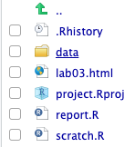
Then click the Upload option:
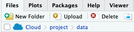
You should see the following dialog box:
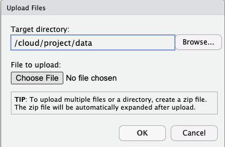
Click “Choose File” and navigate to where you saved “BatTongues2.csv” and select it.
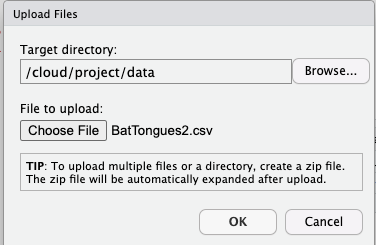
Click OK. Then you should see “BatTongues2.csv” in your data directory.
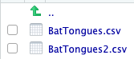
Look at “BatTongues2.csv” in the RStudio Cloud viewer by clicking the file name and selecting “View File”
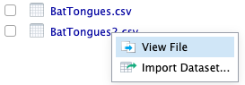
It should something like this:
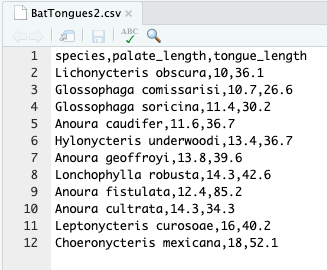
3.3 Questions
Review: Import “BatTongues2.csv” using the
read.csv(), name the data.framebat_tongues, and make a scatterplot using the ggplot2 package. It should look the same as last week unless you made a typo.Calculate the sample variance and standard deviation.
The variance and standard deviation are common descriptions of the variability in a population. If we’re plotting the data in a histogram, these are associated with the spread of histogram. By convention the population variance and standard deviations are often denoted \(\sigma ^ 2\) and \(\sigma\), respectively (\(\sigma\), pronounced “sig-ma”, is a lowercase Greek letter). The sample variance and standard deviations are often denoted \(s^2\) and \(s\), respectively. In both cases, the standard deviation is simply the square root of the variance.
The equations for the sample variance and standard deviation are:
\[ s ^ 2 = \frac{\Sigma^{n}_{i=1} (Y_i - \bar{Y}) ^ 2}{n - 1} \] \[ s = \sqrt{\frac{\Sigma^{n}_{i=1} (Y_i - \bar{Y}) ^ 2}{n - 1}} \]
Calculate the sample variance of the
palate_lengthvariable. Note that if you named the column something other thanpalate_length, you will have to use your name. Here’s a couple hints to get started:# Create a vector and call it Y Y <- bat_tongues$palate_length # Calculate the mean of Y Y_bar <- mean(Y) # Calculate the sample size, n n <- length(Y) # Calculate the squared deviations (Y_i - Y_bar) ^ 2 squared_devs <- (Y - Y_bar) ^ 2Once you’re done, you can check your answer using the
var()function in Rvar(bat_tongues$palate_length)Now calculate the standard deviation and check your result using the
sd()function.
Learning when to use mean versus median. For this exercise, we’ll use a data set on leaf area from Wright et al. 2017.
Import the file “wright_etal_2017.csv” from the data directory using the
read.csv()function. Call the data.frameleafsize.Make a histogram of leaf size (units of cm\(^2\)) using ggplot2. The variable name is
leafsize_cm2. It should look something like this: 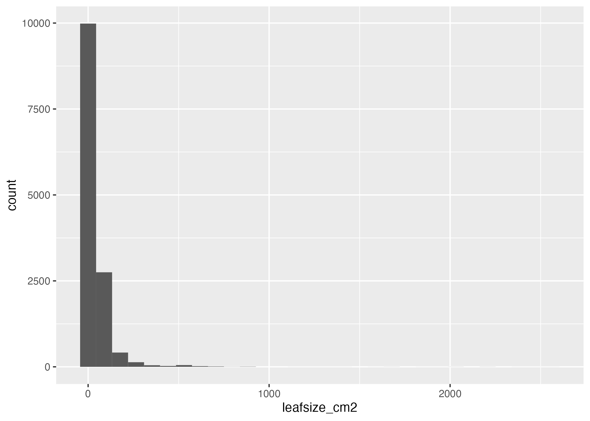Describe the distribution of leaf size. Do you expect the mean or median to be larger? Check your answer using the
mean()andmedian()functions. Make sure to use thena.rm = TRUEargument to ignore missing data. Which value would you use to describe the location (aka central tendency) of leaf size in this data set?Now let’s look at the power of log-transformation. First, use the
+ scale_x_log10()function in ggplot2 to plot leaf size on a log\(_{10}\)-transformed scale. Modify your previous histogram using this function. The output should look something like this: 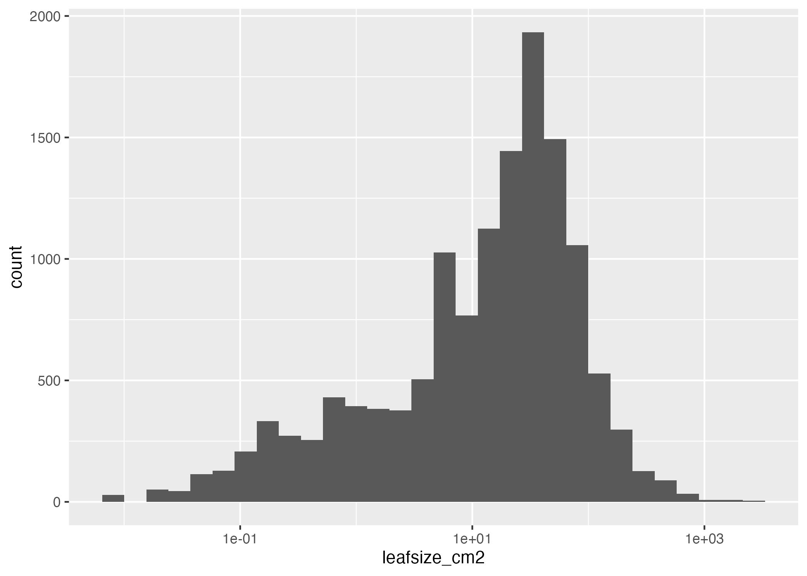Now describe the shape of this distribution. Would you expect the mean or median to be higher? Check your guesses by first creating a new column called
log10_leafsize_cm2. Hint: you’ll need to use the$operator and thelog(..., base = 10)orlog10(...)functions. Then usemean()andmedian()on the new column.Now, would you still use the same function (
mean()ormedian()) you selected in part c. to describe the location of the log-transformed leaf size? Explain your answer.
Make a random sample.
Let’s assume that the data set represents the entire population of leaf sizes in the world (it doesn’t, but let’s just assume). Now we’ll look at the property of random samples from this population.
To make our lives simpler, let’s first filter out the missing values using the
subset()function.leafsize1 <- subset(leafsize, !is.na(leafsize_cm2))Note how we now have two data frames,
leafsizeandleafsize1.leafsize1has all the same columns as the original, but without rows containing missing values. The command!is.na()(pronounced “bang! is-dot-na”) tellssubsetwhich values are NOTNA. In R,!(“bang!”) means NOT.What is the sample size now? You can use the
nrow()function to figure this out. Assign the output ofnrowto a variable namedn_leaves.To take a random sample, all members of the population must have the same chance of being chosen for our sample. In R, the function
sample()can randomly choose integers from a given range. For example, to randomly sample 5 individuals from 25 possibilities, we can use:sample(25, size = 5)Now randomly sample 5 leaf sizes and assign the output to a vector called
i:i <- sample(n_leaves, size = 5)The square brackets
[ ]in R let you extract portions of a vector. Extract the values of the random leaves you sampled using the square brackets and assign the output asleafsize1_sample; you can run the following code:leafsize1_sample <- leafsize1$leafsize_cm2[i]Use R to calculate the mean of the leaf sizes for these 5 leaves in your random sample. The result is an estimate of the mean leaf size in your population.
Make another random sample of 5 leaves, and calculate the mean of this sample. Did you get a different number from the mean of the first sample? Why do you think the second sample mean is different from the first?